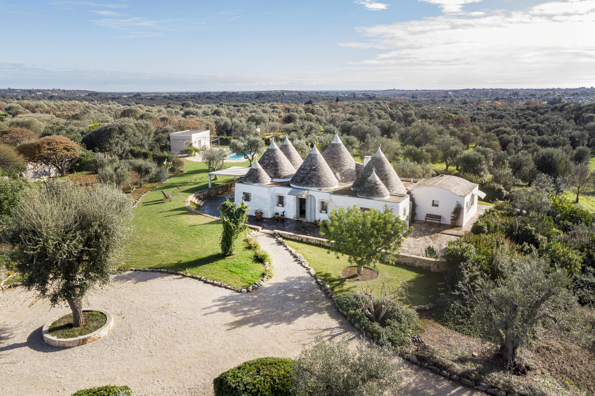
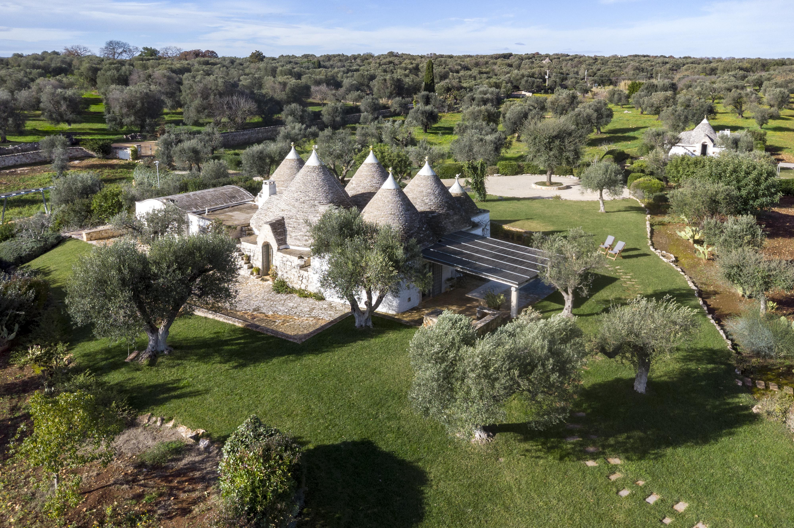
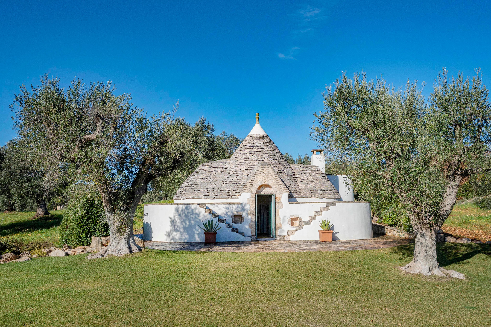
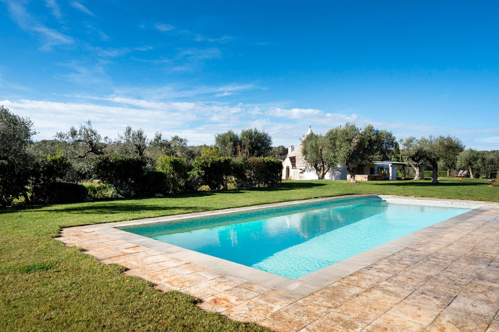
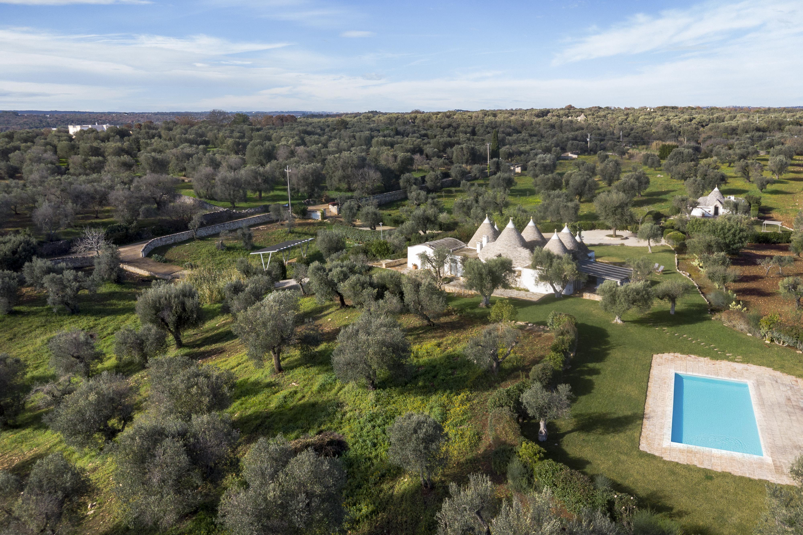
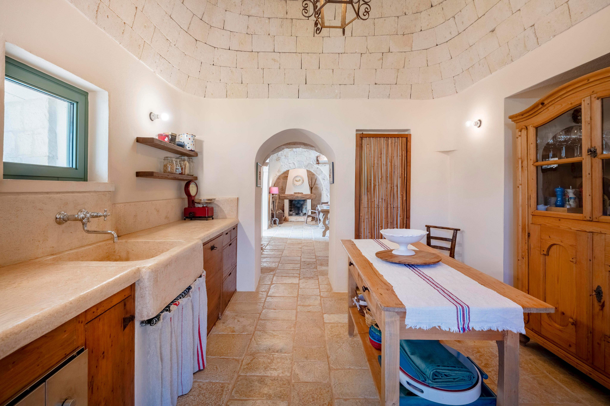
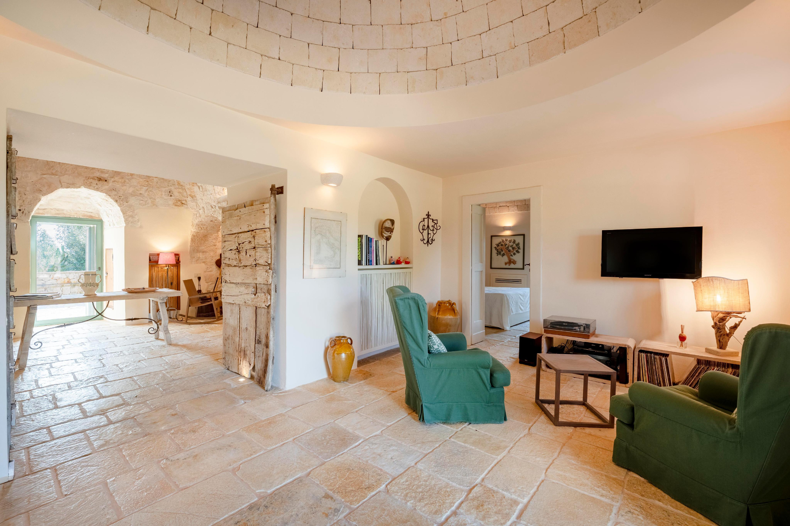

€1.100.000
Ostuni countryside, Puglia
Open the listingSeven-cone trullo and lamia plus a guest trullo, traditional stone kitchen, cone ceilings, dry-stone olives and a built saltwater pool. Habitable now — the Valle d’Itria character brief at scale.
Opened 30 Aug 2026 (held 29 Aug for mix; still €1,100,000 ACTIVE). 4 bed / 4 bath / 360 m² / 23,000 m². ~200 olives, artesian well, PV, alarm. Body confirms saltwater pool + BBQ patio. Not ostuni-trulli-casale W-0473JR or ceglie-masseria W-02ZRFB. Not a bargain at €1.1M.





